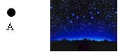
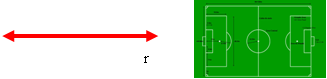
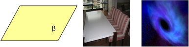

Ponto: o ponto pode ser algo localizado no espaço, como um furo, uma estrela no céu, o centro do campo de futebol, etc. . Os pontos são infinitos e não possuem dimensão mensurável (adimensional). Portanto, sua única propriedade garantida é sua localização.
Reta: podemos dizer que a reta é formada por infinitos pontos, como uma caneta, uma corda esticada, lados de um campo de futebol, as traves do gol, os raios solares, etc. É composta por pontos, infinita nos dois lados e determina a distância mais curta entre dois pontos.
Plano: pode ser a superfície de uma parede, o chão, um quadro, universo, etc. É outra estrutura infinita que se estende em todas as direções.
